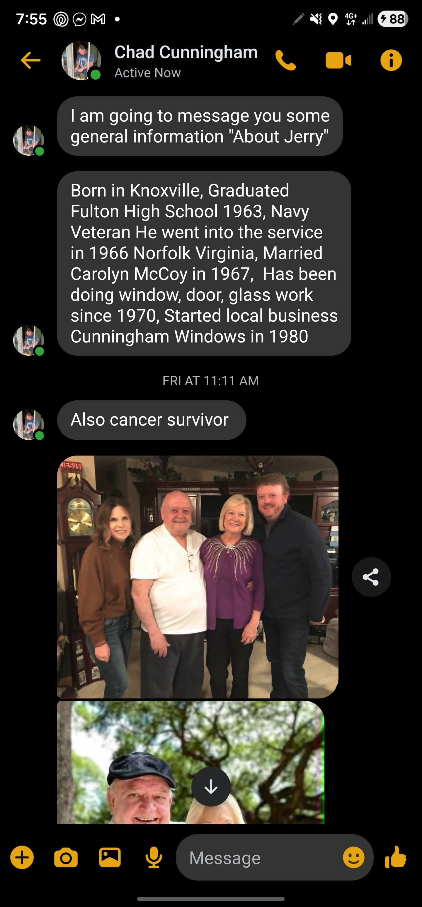
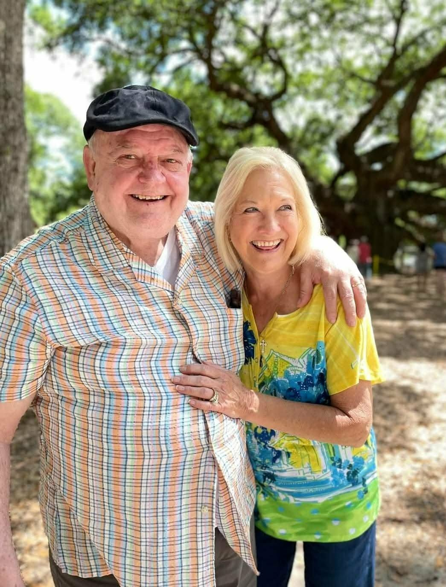
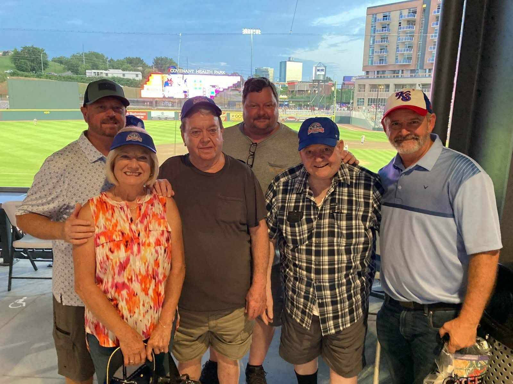

About Cunningham Windows
Knoxville native, Fulton High School graduate, Navy veteran, cancer survivor, and founder of Cunningham Windows.
Jerry started Cunningham Windows after years of hands-on window, door, and glass work.
A local company built on decades of practical trade experience and East Tennessee relationships.

A Knoxville Story
Jerry Cunningham was born in Knoxville and graduated from Fulton High School in 1963. He entered the Navy in 1966 and served in Norfolk, Virginia, carrying forward the discipline and work ethic that would later shape his approach to business.
In 1967, Jerry married Carolyn McCoy. A few years later, in 1970, he began working in windows, doors, and glass. That hands-on experience became the foundation for Cunningham Windows, the local business he started in 1980.
Jerry is also a cancer survivor. His story is one of faith, family, resilience, and decades of service to homeowners across Knoxville, Corryton, and the surrounding East Tennessee communities.
Jerry Cunningham
Cunningham Windows carries Jerry's name because the company is personal: local roots, long relationships, and a direct commitment to doing the work right.
What Cunningham Windows Stands For
You get straightforward guidance on repair, replacement, glass, screen, and door options before work begins.
The goal is to match the right service to the home, whether that means a focused repair or a larger replacement project.
Jerry's story as a cancer survivor is part of the heart behind the company: keep showing up and take care of people.
Family And History


Ready To Talk?
Serving Knoxville, Corryton, and surrounding East Tennessee communities.